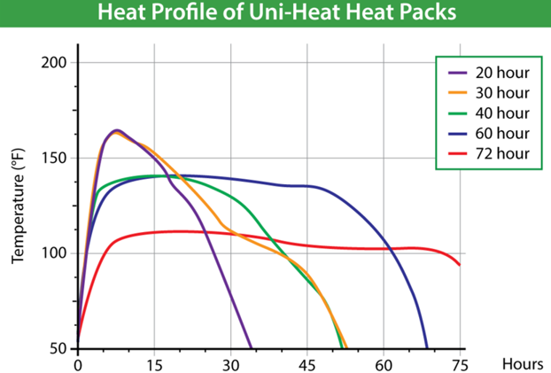

Frequently Asked Questions
Table of Contents
Live Shipping Help
Shipping Mantises
1. When shipping a mantis, the first step is to take note of the last time that individual has molted. If you are unsure, take note of how the individual looks or acts. Look for symptoms of premolt such as a thick abdomen despite no recent meals, a refusal of food, sluggishness, open raptorials, and, in older individuals, swollen wingbuds. If one appears to be in premolt, hold off on shipping! If a mantis is shipped at this time, it has a higher chance of molting in transit. The stress of shipping can be detrimental to a premolt mantis, and molting in transit can be deadly - especially in smaller containers. For very young nymphs that may be harder to distinguish premolt in, provide a container at least 3x the length of the mantis in height in case of a molt in transit. If your mantis has wings, they are an adult and will not molt again.
2. Take note of the conditions of the weather the week of shipping. Are there any storms predicted? Severe weather? Floods? Fires? Hold off shipping in extreme weather. Temperatures between 65°F and 80°F are considered optimal. Take note of daytime temps at the destination and judge based on that. Temperatures under 65°F should include a UniHeat 72-hour heat pack. Any temperatures 32°F or under should be held at a post office or delayed. In case of hot weather, include an ice pack or frozen phase pack. With temperatures over 90°F, hold at post or delay shipment. Phase packs can be used to keep an average temperature of around 70°F and can be used in conjunction with heating or cooling elements to better regulate extremes for sensitive animals. Generally, 0.5"-1" styrofoam insulation is appropriate for boxes. If the temperatures on the day of arrival are 68-75°F, packages can often be shipped without any insulation or temperature regulation.
NOTE: DO NOT USE HANDWARMERS. They skyrocket to over 158°F! 72 hour packs are the safest and gradually warms up to a max of 115°F, generally hovering around 90-100°F!

3. Secure a box for your transit! Cubes are most often used, and I find my most sent/received packages are sized 6x6x6", 7x7x6", 7x7x7", 8x8x8", and 10x10x10". These boxes can be easily assembled with a blade and a vaccume to clean up the extra foam. You can also buy premade boxes, but they will be costly. Cubic boxes are easily broken down into parts that can be measured and cut - for instance an 8x8x8" box with 1" styrafoam insulation would have peices cut into two 8x8 peices and four 6x7. Cubic 6" boxes do best with 0.5" styrafoam as it allows you to send more inside, but is not as insulated as a 1" foam box. Take note of what you're shipping and what temperatures will be expected the day of delivery, use this to determine how much insulation you need. I insulate packages going to very hot areas in summer, and ALWAYS insulate packages in winter.
4. Figure out what container you'll be shipping your mantis in. Mantises should have grip and wiggle room to turn around in. As long as you are sure your mantis isn't in premolt, you can ship them in a smaller container than you would usually house them in. I often send my mantises in meshed or paper-towel-lined deli cups, sometimes divided by barriers to send more at once in a smaller package. The dividers are made from remnants of plastic from cutting other cups, coated with paper towels. I use both fabric mesh lids and windowscreen/tulle mesh lids. Never use metal mesh, as it can hurt the feet of your mantis. You generally won't need cross ventilation during shipping as long as the top is appropriately ventilated. Make sure your mesh is snug and that your hot glue has dried. I use modified 5.5 oz containers for singular young mantises, but also often divide 8 and 16 oz cups into 3-6 sections for the safe transport of multiple mantises at once. 5.5 oz cups should have a cotton pad glued to the bottom of the cup. 16 oz cups can also be used for most medium-sized older/adult mantises and can be divided for smaller species. 32 oz cups can be used for shipping larger or older/adult mantises such as Heterochatea, Hierodula, Tenodera, and Brunneria. You can always use whatever plastics you have lying around waiting to be recycled - get creative to save space and resources! I've provided multiple photos of the cups I use below.
5. Check to see if your mantis is receptive to food! I often feed and water my mantises the night before or the day of shipping. They'll generally be inside a package in transit for a few days, so making sure they're fed and hydrated for the trip is essential. Make sure not to feed them too much, however! Be sure to spray mantises directly with water to make sure they drink. Mantises should have a decently thick abdomen before shipping and should never be shipped post-molt without having taken at least one meal post-hardening.
6. Once your mantis is fed and hydrated, put your mantis into the cup you made. Be sure to tape the lid down to the sides of the cup to keep the lid on in transit. Now that your mantis is securely packed, wrap their cup in paper. It's time to pack your box! Grab any needed temperature control, such as an ice/heat/phase pack. Ice packs should be chilled for at least 24 hours before shipping, and heat packs should be opened at least 30 minutes before putting them into the box. Wrap your temperature control in paper, generally a rectangle. This should fit snugly into the side of your box alongside a wall. Make sure to pack a bit more paper between your temp pack and your critters. Take your mantis(es) and place the wrapped cup(s) into your box, making sure to stuff any cracks between the containers with paper. If your package audibly rattles - things can move, and you need more paper. Be sure to pack and tape any other items needed for your order (such as feeders) separately and put those containers into your package too. Once you've included your temperature control and all needed items, place the styrofoam lid on your box.
7. Obtain and print your label. I generally use Pirate Ship for UPS and USPS deals, and Morph Market for FedEx. I receive 60% off shipping with each carrier through these accounts. Make sure to include your information on the return label and to confirm with the recipient that the label and the information provided were indeed correct. You'll generally need a name, address, zip code, and state to ship to someone and create a label. Business names are optional. Generally, the cost of the animals, as well as shipping and handling, including the cost of the label, falls upon the purchaser. Generally, shipping is 2 Day Air or Overnight. Once a label is purchased, print the label out. Tape this to the top of your box. Make sure that the box is taped up firmly.
8. STICKERS TIME! This is my favorite part, but optional for sellers. I do NOT include live animal or live insect labels, as that may lead to a package getting kicked or otherwise abused. I still note that a package is sensitive, however. What I do use are "Fragile", "This side up", "Perishable", and "Store at room temperature" labels. Some shipping sites request or even make it mandatory that you label your live packages with species latin and common names.
9. Now that your package is shake-proof, labeled, and paid for, you're ready to drop it off at the nearest center! I recommend dropping them off at actual hubs or customer service centers rather than outlet sites or access points, as this can often lead to the package being delayed due to being picked up the following day. Do NOT ship during holidays or when delays have been noted by the shipping carriers. Do NOT send packages late in the week due to the potential of delays. I usually ship Mon-Wed using UPS 2 Day Air. Once your package is dropped off, it's up to the post office to treat it right - so make sure you pack your shipment ready for any abuse.
10. The day of arrival, have them do a DOA check. Make sure the person is around or someone related to them is to take the package inside. Open the package as soon as possible. If no animals appear dead or ailing, thank them for choosing you as a vendor. If LAG is needed and supported, offer money back or replacements. With proper packing, this should be rare even in times of a delay.
Shipping Mantis Oothecae
1. When shipping a mantis oothecae, take note of the date it was laid. It is preferable to ship an oothecae before they are predicted to hatch. Hatching in transit can be stressful for you and your mantises.i1 nymphs will also need food and water very soon after hatching, and if in transit may not receive care in time to prevent losses. If you are unsure of the date an oothecae was laid, give an estimate and provide enough space in the shipping container to accomidate for an accidental hatch.
2. Just like with individual mantises, take note of the climate you are shipping to/from and for any weather systems that may impede travel. Hold off shipping during holidays, weather emegencies, and noted shipping delays. Insulation and temperature control is reccommended for packages, even if oothecae only packages are often smaller.
3. Oothecae can be included with other critters in shipments or sent on their own. If sent on their own, oothecae can be shipped in much smaller boxes as long as temperatures are aggreable. In colder temperatures, make sure there's enough space in the package to fit temperature control. I often use 6x6x6' boxes for small oothecae shipments.
4. I hot glue (using slightly cooled glue) to the lids of deli cups oothecae. This can be either directly done or through gluing the stick it is laid upon up instead. Always glue an oothecae facing down with the "zipper" out from the top of the container unless it is a species known to lay and hatch on the ground (eg. Popa spurca). I often use 5.5oz, 8oz, and 16oz containers to ship oothecae in. This depends on the size, species and amount of ooths sent. I provide poke hole ventilation and heavily spray an ooth down before shipping it. Sometimes I may include a (previously glued) damp paper towel or cotton round to retain humidity.
5. Wrap this container in paper and set it into the designated package after taping the container shut. Make sure your package is shake proof, including that your hot glue is durable enough not to detach from the lid. Add your temperature control and send them off. The day that they arrive at the destination, have them do a hatch check.
Shipping Spiders
1. 2. 3.
Q/A 2
...
....
Q/A 3
...
...
Q/A 4
...
...